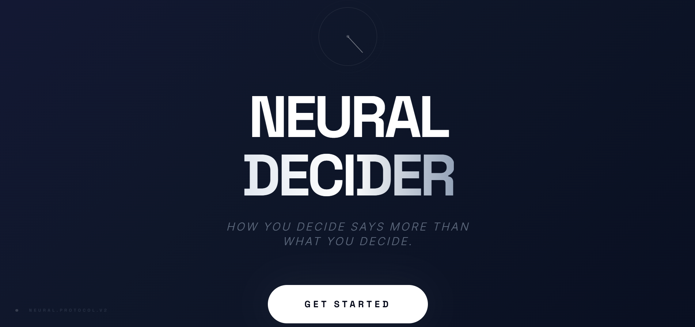
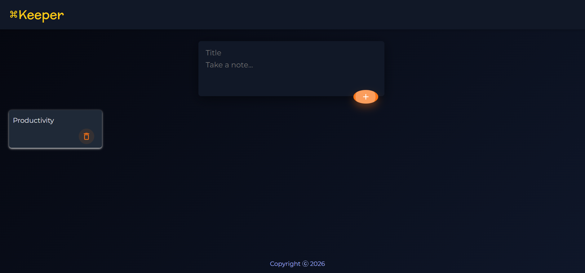

React
Component-based interfaces for responsive, interactive web applications.
I’m an early-career developer exploring frontend, full-stack, and backend roles. I care about making the whole flow work: a clear screen, dependable logic, and data that stays consistent.
Technologies I’ve used in the projects shown here—not a claim of mastery in every tool.
Component-based interfaces for responsive, interactive web applications.
Typed application development that makes code easier to reason about and maintain.
Modern browser features, event-driven interactions, and practical client-side logic.
Lightweight server-side APIs and application logic for full-stack projects.
Relational data modelling and persistence for applications that need reliable records.
Version-controlled development and public project documentation.
Focused experiments in product thinking, interface design, and end-to-end application flow.
A task-to-plant system: complete a task, grow it through a 20-minute cycle, then harvest and collect it. Auth, row-level security, database constraints, and a transactional planting RPC are in place; hardening and deployment are underway.
Private development · no public demo yet
An AI-assisted reflection experiment where users respond to choice-based scenarios and receive generated reflections. It explores an idea; its output is not a validated psychological assessment.
Live experiment View on GitHubA workout-tracking project with a Node/Express backend and PostgreSQL foundation for recording exercises, weights, and reps. It is still a prototype; integration and deployment need finishing.
View on GitHub
A responsive React and Material UI notes app with add and delete flows. Notes currently live only in page state, so they do not persist after refresh.
View on GitHub Live demoI’m learning to treat projects as complete systems: scope the problem, shape the data, connect the flow, and verify the result.
Start with the user problem, constraints, and the outcome the product needs to deliver.
Break the idea into a sensible scope, identify the key flows, and choose the right tools.
Develop clear, responsive interfaces and connect them to the data and logic they need.
Test the core experience, improve the rough edges, and document what I learn for the next iteration.
“A clear interface should help someone take the next step without making them think twice.”
“The best implementation is readable enough that the next person can improve it with confidence.”
“A well-scoped project can teach more than an ambitious idea left unfinished.”
“Every project is a chance to make the next decision with more evidence and better judgement.”
Before focusing on software, I worked on court transcription at Percept Legal on a contract basis. The work involved adding accurate speaker labels, meeting daily client deadlines, and checking files for discrepancies—habits I bring to building and reviewing software.
Outside work: gym, martial arts, and guitar. Based in Kolkata; open to local and remote developer roles.
I’m looking for a developer role where I can keep learning by shipping useful, dependable software. Explore the projects or get in touch.